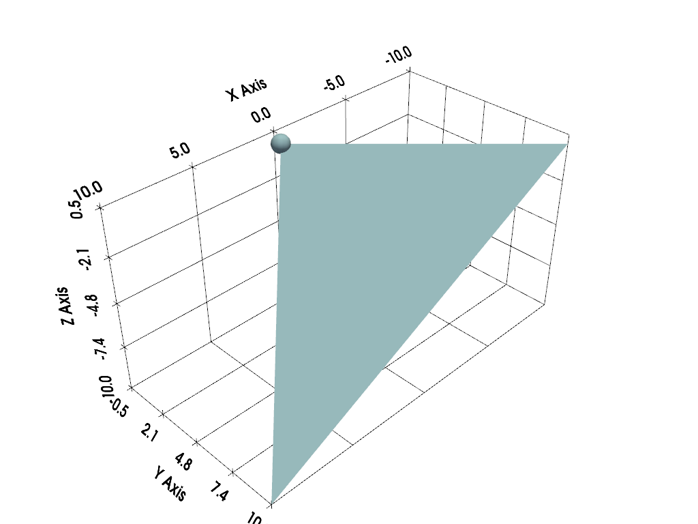
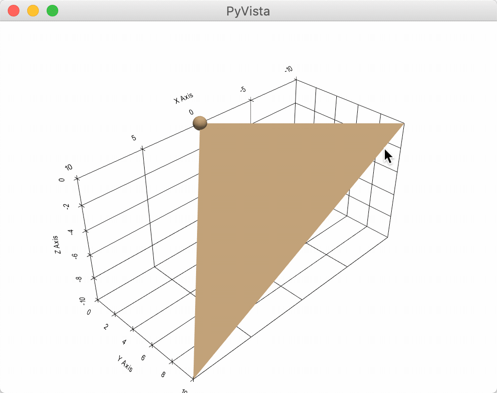
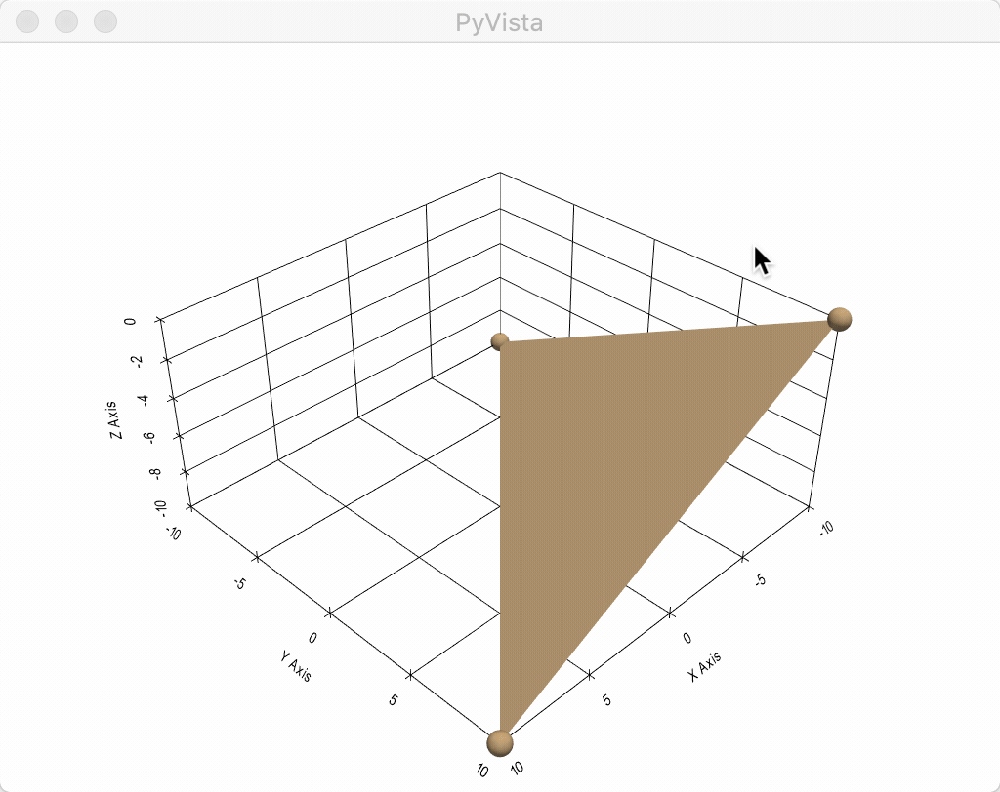
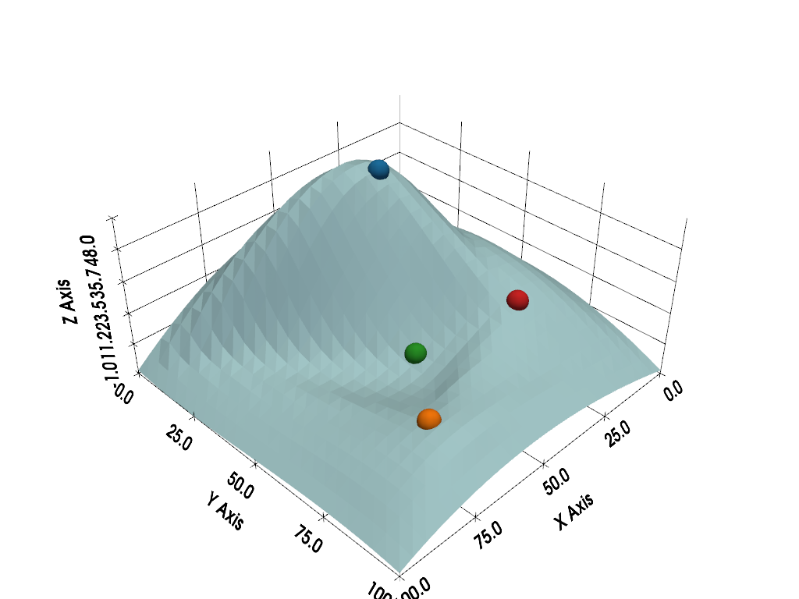
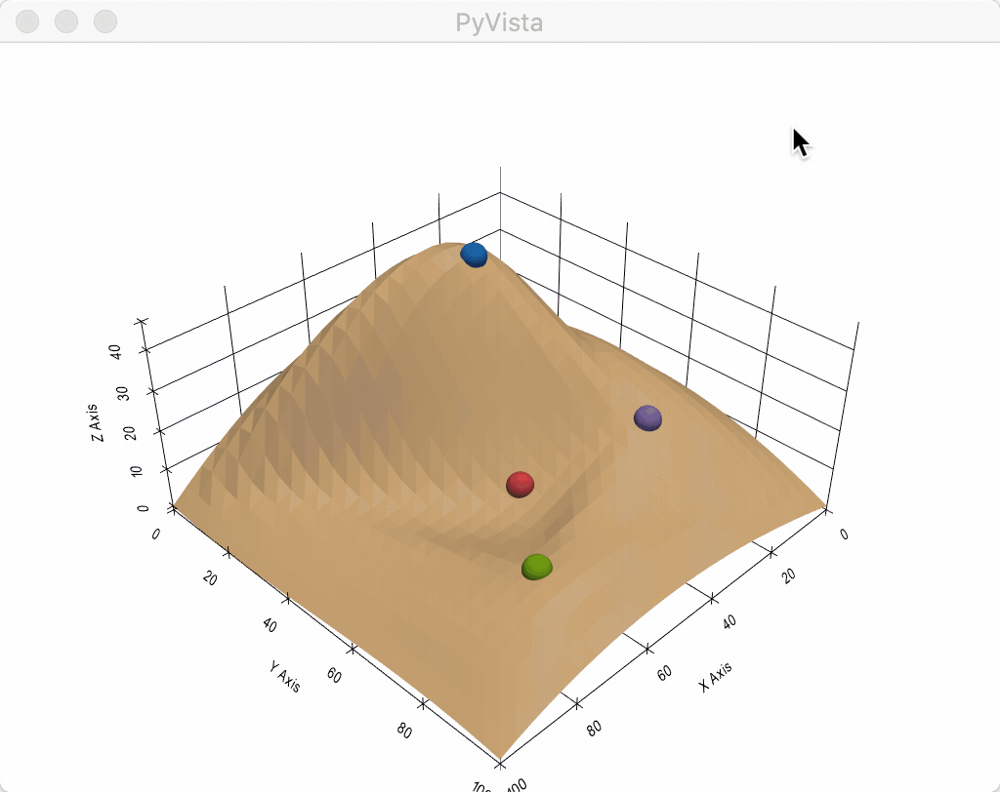

注釈
完全なサンプルコードをダウンロードしたり、Binderを使ってブラウザでこのサンプルを実行するには、 最後に進んでください 。
球体ウィジェット#
球ウィジェットは， pyvista.Plotter.add_sphere_widget() メソッドおよび pyvista.Plotter.clear_sphere_widgets() メソッドによって，それぞれ有効および無効にすることができます．このウィジェットは，頂点の位置を制御できるため，非常に用途が広く，ほとんどすべてのオブジェクトの位置を制御または更新できます．
このウィジェットをそのまま使用する便利なヘルパーメソッドはありませんが，このウィジェットを使用する方法が多数追加されているため，シーンに複数のウィジェットを簡単に追加できます．
サーフェスメッシュをすべて更新するいくつかの使用例を見てみましょう．
例A#
単一の球ウィジェットを使用します
import numpy as np
import pyvista as pv
# Create a triangle surface
surf = pv.PolyData()
surf.points = np.array(
[
[-10, -10, -10],
[10, 10, -10],
[-10, 10, 0],
]
)
surf.faces = np.array([3, 0, 1, 2])
p = pv.Plotter()
def callback(point) -> None:
surf.points[0] = point
p.add_sphere_widget(callback)
p.add_mesh(surf, color=True)
p.show_grid()
p.show()

以下はユーザ対話型のスクリーンショットです
例B#
一度に複数の球体ウィジェットを使用します
import numpy as np
import pyvista as pv
# Create a triangle surface
surf = pv.PolyData()
surf.points = np.array(
[
[-10, -10, -10],
[10, 10, -10],
[-10, 10, 0],
]
)
surf.faces = np.array([3, 0, 1, 2])
p = pv.Plotter()
def callback(point, i) -> None:
surf.points[i] = point
p.add_sphere_widget(callback, center=surf.points)
p.add_mesh(surf, color=True)
p.show_grid()
p.show()

以下はユーザ対話型のスクリーンショットです
例C#
これは，4つの球体ウィジェットを使用してサーフェス上の摂動を更新し，いくつかの境界条件でそれらの間を補間する最もクールな方法です．
from itertools import cycle
import matplotlib as mpl
import numpy as np
import pyvista as pv
from scipy.interpolate import griddata
def get_colors(n):
"""A helper function to get n colors."""
cycler = mpl.rcParams["axes.prop_cycle"]
colors = cycle(cycler)
return [next(colors)["color"] for i in range(n)]
# Create a grid to interpolate to
xmin, xmax, ymin, ymax = 0, 100, 0, 100
x = np.linspace(xmin, xmax, num=25)
y = np.linspace(ymin, ymax, num=25)
xx, yy, zz = np.meshgrid(x, y, [0])
# Make sure boundary conditions exist
boundaries = np.array([[xmin, ymin, 0], [xmin, ymax, 0], [xmax, ymin, 0], [xmax, ymax, 0]])
# Create the PyVista mesh to hold this grid
surf = pv.StructuredGrid(xx, yy, zz)
# Create some initial perturbations
# - this array will be updated inplace
points = np.array([[33, 25, 45], [70, 80, 13], [51, 57, 10], [25, 69, 20]])
# Create an interpolation function to update that surface mesh
def update_surface(point, i) -> None:
points[i] = point
tp = np.vstack((points, boundaries))
zz = griddata(tp[:, 0:2], tp[:, 2], (xx[:, :, 0], yy[:, :, 0]), method="cubic")
surf.points[:, -1] = zz.ravel(order="F")
# Get a list of unique colors for each widget
colors = get_colors(len(points))
# Begin the plotting routine
p = pv.Plotter()
# Add the surface to the scene
p.add_mesh(surf, color=True)
# Add the widgets which will update the surface
p.add_sphere_widget(update_surface, center=points, color=colors, radius=3)
# Add axes grid
p.show_grid()
# Show it!
p.show()

以下はユーザ対話型のスクリーンショットです
Total running time of the script: (0 minutes 1.551 seconds)